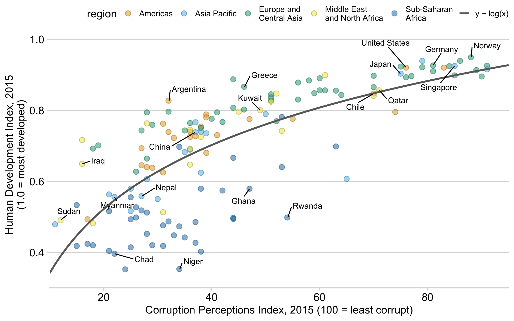

Problem set 1
Due by 11:59 PM on Monday, September 9, 2019
To complete this task, you MUST submit your final folder (compressed as a zip file) through here to Canvas by 11:59pm on September 9, 2019. Each person needs to submit their own folder! So if you work in pairs, both individuals have to submit a folder.
Task 0
Either use RStudio.Cloud or make sure you install R and RStudio and tidyverse first.Follow these instructions and install R, RStudio, and all the tidyverse packages. If you have any questions, send a message on the class’ Slack!
Create a new R project as a “New Directory” (folder). You should call your name project “problem-set-1-[yourlastname]”, where [yourlastname] is your last name.
Within your new project folder, download this R Markdown file.Your browser might show the file instead of downloading it. If that’s the case, you can copy/paste the code from the browser to RStudio. In RStudio, go to “File” > “New” > “New R Markdown…”, click “OK” with the default options, delete all the placeholder code/text in the new file, and paste the example code in the now-blank file.
It contains an outline/skeleton of what you’ll need to do in this problem set, and it includes lots of the code prewritten just for you!
Next, you’ll need to download the csv file we’ll be working with. Click this link and “Save as” and put it into a folder within your new project called “/data/”.
In the end, the structure of your new project directory should look like this:
problem-set-1-yourlastname/
problem-set-1-yourlastname.Rmd
problem-set-1-yourlastname.Rproj
data/
corrupt.csvComplete the two tasks below and type your answers in that downloaded file. When you’re done, knit the document as a html file with the “Knit” button at the top of the script editing pane.
Task 1: Become familiar with RStudio and RMarkdown
In Task 2, you’ll play with actual R commands and create graphics. Before we get there, you need to familiarize yourself with RStudio. Go through this short tutorial.
Finally, you will write future memos and problems sets in RMarkdown instead of Word. RStudio has a helpful tutorial and a short video about R Markdown.
Go through these short lessons:
- Introduction
- How it Works
- Code Chunks
- Inline Code
- Markdown Basics The R Markdown Reference Guide is super useful here.
- Output Formats
Before doing these R Markdown tutorials, you’ll need to install a couple more R packages. Use RStudio’s “Packages” panel to install rmarkdown and viridis. Alternatively, paste these commands in the RStudio Console: install.packages("rmarkdown") and install.packages("viridis").You can also type install.packages(c("rmarkdown", "viridis")) to install both at the same time.
Don’t worry if you don’t completely understand RMarkdown!See R4DS Chapter 27 if you need some help.
Try your hardest and play around with it.Also, (optional) if you want to convert R Markdown files to PDF instead of just Word or HTML, you’ll need to install LaTeX, which is a fancy scientific typesetting program. You don’t need to know how it works—it just has to be installed for R to use it. The easiest way to install it is with the tinytex R package. Run these two lines: install.packages('tinytex') then tinytex::install_tinytex()
For this task, there are three questions you will need to answer. They can be answered in the .Rmd file within your project (“problem-set-1-yourlastname.Rmd”). Like the similar questions, write your answer where the “xxxxx” placeholders are.
Task 2: Analyzing Country-level Corruption vs. Human Development
We’ll look at country-level data in 2015 to explore the relationship between perceived corruption (CPI, where 100 = least corrupt, 0 = most corrupt) and country development (HDI, where 1 = developed country, 0 = developing).
For this task, your task will be to create this plot.

We’ll start slow and then later on I’ll provide you the code to run.
You’ll use the same .Rmd file you previously used and have two different types of tasks to do.
“### Question / xxxxx” = Write, in complete English sentences, your response to questions. 1-2 sentences is sufficient.
“### Code” = Write R code in the chunk corresponding to the instructions.
In total, there are 15 Questions and 10 Code chunks.
To complete your assignment
Knit the completed R Markdown file as a html (use the “Knit” button at the top of the script editor window) and compress the entire folder as a zip file (including the html document, RStudio Project, any respective data, and the R Markdown file).
To complete the assignment, upload your zip file of the folder to Canvas by 11:59pm on September 9, 2019. Each person needs to submit their own folder (zip file). (Example: if you work with someone else, you each have to submit your own zip file!)